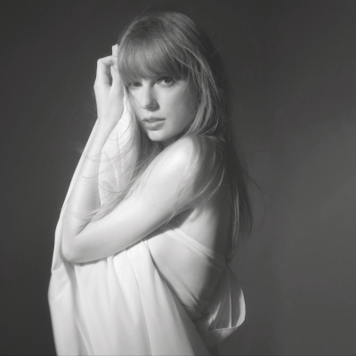

La versión estándar del álbum incluye dieciséis canciones, mientras que la versión extendida The Anthology presenta un total de 31 canciones, convirtiéndolo en un doble álbum. Además, se lanzaron cuatro ediciones especiales en formato físico, cada una con una pista exclusiva titulada «The Manuscript», «The Bolter», «The Albatross» o «The Black Dog», que corresponden a las quince canciones adicionales de la versión extendida.

You taught me, you caged me, and then you called me crazy. - Who's Afraid of Little Old Me?Swift asistió a la ceremonia de los Grammy y ganó el premio Grammy a Mejor Álbum de Pop Vocal y Álbum del Año por Midnights. Durante su discurso de aceptación del primero, reveló que su undécimo álbum de estudio se titularía The Tortured Poets Department y anunció su fecha de lanzamiento, el 19 de abril de 2024, que había mantenido en secreto durante casi dos años. Tras el anuncio, la cantante reveló la portada del disco a través de sus redes sociales, convirtiéndose en el anuncio de un álbum y la publicación más rápida en superar el millón de Me gusta en la historia de Instagram.Este álbum no es comercial, probablemente si no te gusta ni conoces un poco a Swift y su vida este álbum no es para ti y te parezca aburrido. Es un álbum creado para ella misma y para sus fans donde expresa vivencias y sentimientos por los que pasó en estos últimos años en cuanto a su vida amorosa y personal de la mejor forma que ella lo sabe hacer: líricamente. Por ese motivo a mucha gente le parece "aburrido" porque son canciones llenas de palabras y metáforas complejas, que, cuando no tienes el contexto del porque ella lo dice, no lo entenderás. No atrae a las masas, ella no busca hacerlo con este álbum tampoco. Mucha gente tiene expectativas de un álbum divertido para bailar y se encontraron con algo más experimental y personal que solo los fans pueden empatizar con el artista porque saben la gran mayoría del contexto.